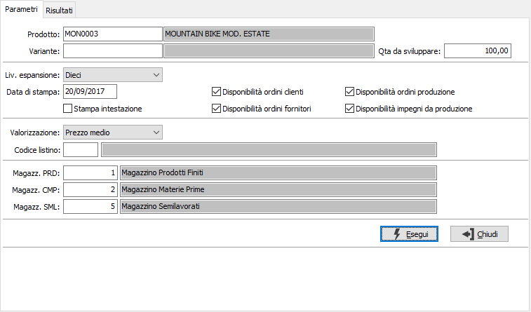
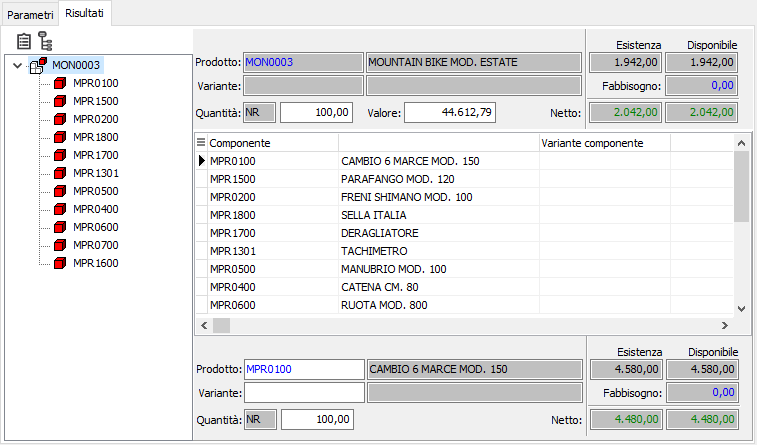

Simulazione fabbisogni
La procedura consente di visualizzare e stampare la situazione relativa alle necessità produttive di singoli prodotti.

PRODOTTO: codice dell'articolo, per cui è presente una distinta base, per cui si desidera effettuare l'elaborazione. Sul campo è attiva la ricerca (F9) sulle distinte base.
QUANTITÀ DA SVILUPPARE: quantità del prodotto per cui si vogliono effettuare le simulazioni di produzione.
LIVELLO ESPANSIONE: consente di selezionare il livello a cui terminare l'espansione della distinta. Viene proposto il livello massimo riportato in configurazione.
DATA STAMPA: data in cui viene effettuata la stampa, viene proposta la data di sistema.
STAMPA INTESTAZIONE: indica se deve essere stampata come prima pagina del report una pagina contenente tutte le informazioni inerenti i criteri di selezione specificati per il report stesso (casella con segno di spunta).
DISPONIBILITÀ ORDINI CLIENTI: determina l'aggiunta al calcolo della disponibilità di magazzino dell'impegno derivante dagli ordini clienti (casella con segno di spunta).
DISPONIBILITÀ ORDINI FORNITORI: determina l'aggiunta al calcolo della disponibilità di magazzino dell'ordinato derivante dagli ordini fornitori (casella con segno di spunta).
DISPONIBILITÀ ORDINI PRODUZIONE: determina l'aggiunta al calcolo della disponibilità di magazzino dell'ordinato derivante dalla produzione (casella con segno di spunta).
DISPONIBILITÀ IMPEGNI DA PRODUZIONE: determina l'aggiunta al calcolo della disponibilità di magazzino dell'impegno derivante dalla produzione (casella con segno di spunta).
VALORIZZAZIONE: definisce il metodo di valorizzazione dei componenti per determinare il valore del composto. Valori possibili:
Nessuna valorizzazione
Prezzo medio
Costo ultimo carico
Costo di mercato
Prezzo di vendita
Prezzo di listino
Come stabilito in distinta base
LISTINO: codice del listino prezzi da utilizzare per ricercare il costo del componente in caso di valorizzazione per listino. Sul campo sono attive le funzioni di ricerca (F9) sulla tabella listini.
MAGAZZINO PRODOTTI: codice del magazzino da utilizzare per i progressivi dei prodotti. Sul campo sono attive le funzioni di ricerca (F9) sulla tabella magazzini.
MAGAZZINO COMPONENTI: codice del magazzino da utilizzare per i progressivi delle materie prime. Sul campo sono attive le funzioni di ricerca (F9) sulla tabella magazzini.
MAGAZZINO SEMILAVORATI: codice del magazzino da utilizzare per i progressivi dei semilavorati. Sul campo sono attive le funzioni di ricerca (F9) sulla tabella magazzini.
La pressione del pulsante Esegui dà inizio all'elaborazione e riporta nella pagina risultati la visualizzazione grafica della distinta base sulla parte sinistra e l'analisi del composto e dei componenti sulla destra; per ogni articolo sono indicate l'esistenza corrente, la disponibilità, il quantitativo da produrre per il composto e la quantità necessaria per i componenti, l'esistenza e la disponibilità nette e l'eventuale fabbisogno; nel caso sia stata richiesta la valorizzazione, per prodotto sarà visualizzato anche il valore.
Sono attivi i tasti Anteprima e Stampa sulla toolbar principale per effettuare la stampa del report.
